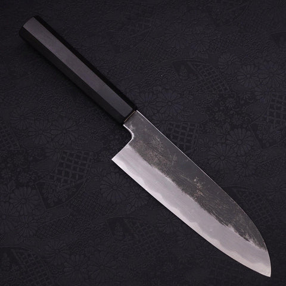
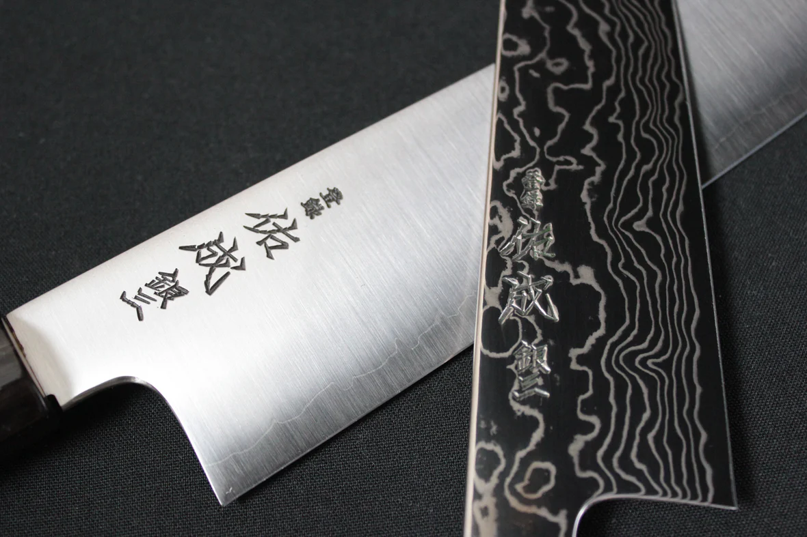
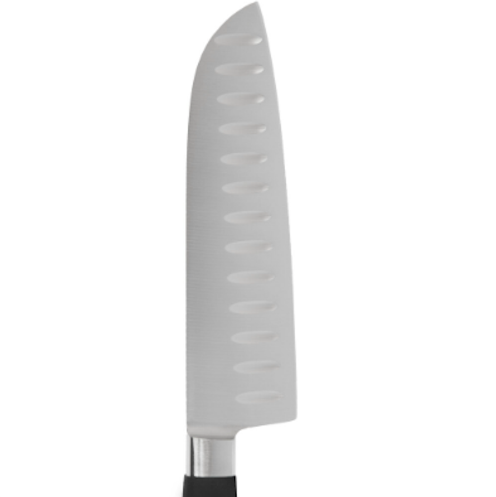
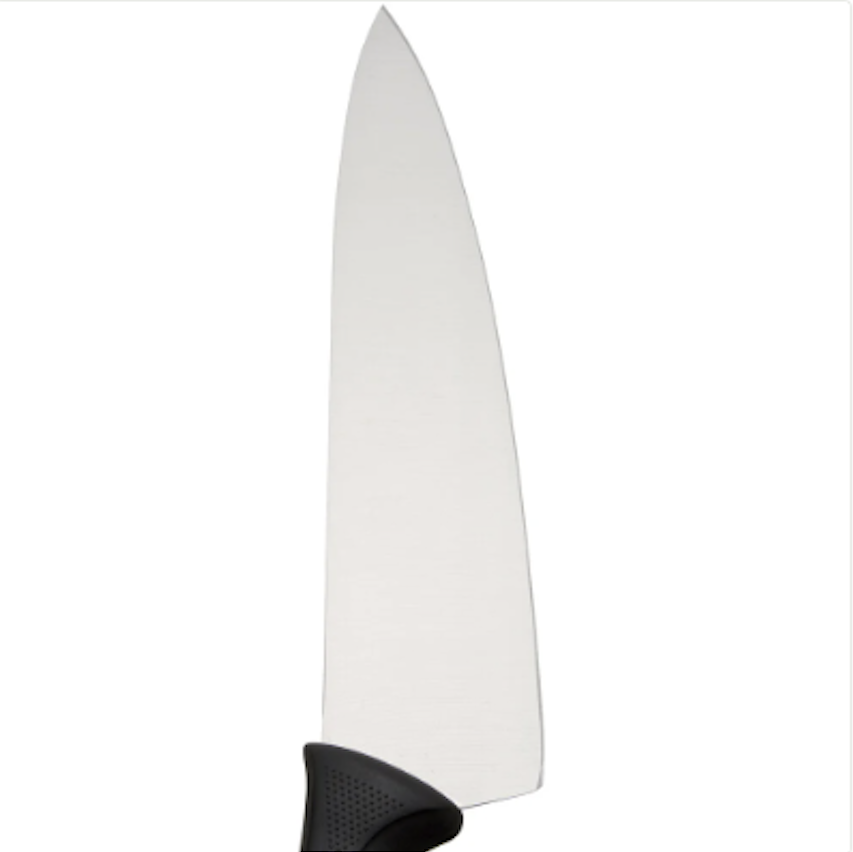
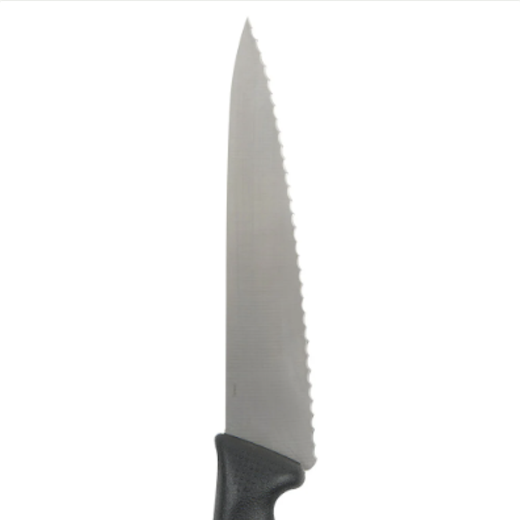

Stainless steel is an alloy of iron, approximately 10–15% chromium, possibly nickel, and molybdenum, with only a small amount of carbon. Typical stainless steel knives are made of 420 stainless, a high-chromium stainless steel alloy often used in flatware. Stainless steel may be softer than carbon steel, but this makes it easier to sharpen. Stainless steel knives resist rust and corrosion better than carbon steel knives.
Ceramic knives are very hard, made from sintered zirconium dioxide, and retain their sharp edge for a long time. They are light in weight, do not impart any taste to food and do not corrode. Suitable for slicing fruit, vegetables and boneless meat. Ceramic knives are best used as a specialist kitchen utensil. Recent manufacturing improvements have made them less brittle. Because of their hardness and brittle edges, sharpening requires special techniques.
Steel blades can be manufactured either by being forged or stamped
Hand forged blades are made in a multi-step process by skilled manual labor. A chunk of steel alloy is heated to a high temperature, and pounded while hot to form it. The blade is then heated above critical temperature (which varies between alloys), quenched in an appropriate liquid, and tempered to the desired hardness. Commercially, "forged" blades may receive as little as one blow from a hammer between dies, to form features such as the "bolster" in a blank. After forging and heat-treating, the blade is polished and sharpened. Forged blades are typically thicker and heavier than stamped blades, which is sometimes advantageous.
Stamped blades are cut to shape directly from cold-rolled steel, heat-treated for strength, then ground, polished, and sharpened. Stamped blades can often, but not always, be identified by the absence of a bolster.
Material comparison for the two most commonly used blade types
Carbon Steel 
Carbon steel is a type of steel alloy that contains a higher percentage of carbon than stainless steel but a lower pecentage of chromium. The higher carbon content results in a harder blade than stainless steel types, but it is more susceptible to rust. It is the preferred steel type for professional chefs because of its wear resistance, and most Japanese steel blades are made with high-carbon steel.
Pros
Cons
Provide exceptional strength and rigidity
Susceptible to rust and staining
Can be honed to a very sharp edge
More brittle than stainless steel knives
Hold their edge for a long time under frequent use
Can chip and break under extreme pressure
Easier to sharpen
Stainless Steel 
Stainless steel is a type of steel alloy that contains a higher percentage of chromium to carbon steel, which gives stainless steel blade their corrosion resistance. The trade-off is that stainless steel blades are not as hard as carbon steel blades and are more difficult to maintain a sharp edge. VG-10 steel is a popular type of stainless steel that is commonly used to make professional-grade cutlery.
Pros
Cons
Easy to maintain
Not as hard and wear-resistant as a carbon steel blade
Resist stains and corrosion
More difficult to re-sharpen
Not as brittle as carbon steel
Types of knife edges
There are three main types of knife edges: granton edge, straight edge and serrated edge. The type of knife edge you will want on your kitchen knife will largely depend on the food you are cutting.

Granton Edge
Creates air pockets between the blade and food for more fluid slicing
Prevents wet and sticky foods from sticking to the blade after each cut

Straight Edge
Makes smooth, clean cuts with a few simple strokes
Best for hard and soft fruits, vegetables and meats

Serrated Edge
Saw through items with a hard exterior and soft interior while keeping them intact
Best for bread, cakes and produce with skin
Damascus steel
Damascus steel refers to the high carbon crucible steel of the blades of historical swords forged using the "wootz process" in the Near East, characterized by distinctive patterns of banding and mottling reminiscent of flowing water, sometimes in a "ladder" or "rose" pattern. "Damascus steel" developed a high reputation for being tough, resistant to shattering, and capable of being honed to a sharp, resilient edge.
Furthermore, there is now a general agreement that although the term "Damascus steel" traces its roots to the medieval city of Damascus, Syria, perhaps as an early example of branding, that many of the swords themselves, or at least the steel ingots from which they were forged, were imported from Southern India, where the steel making techniques used were first developed.
Step 1: Soak Your Stones
When working with waterstones, it's essential to submerge them in water for at least 45 minutes before using. If the porous stones are not fully saturated, they will dry out during sharpening, causing the knife blade to catch, and giving your edge nicks and dings. Soak both your stones, and your stone fixer.
Step 2: Set Up Your Station
Place your stone on a towel set over a cutting board. Keep a container of water nearby to keep your stone constantly moistened during the sharpening process. The stone should be oriented with the short end parallel to the edge of the counter.
Step 3: Begin First Stroke
Begin with your lower-grit stone. Place the heel of your knife on the far edge of the stone, holding the blade gently but firmly with both hands at a 15- to 20-degree angle. Using even pressure, slowly drag the knife over the stone toward you down the length of the stone while simultaneously moving the knife such that the contact point moves toward the tip of the blade.
Step 4: Maintain Angle
Be careful to maintain the 15 to 20 degree angle as you pull the knife across the stone. Pressure should be firm, but gentle. The blade should glide smoothly across the stone as you pull. If you need help maintaining your angle, you can use an angle guide.
Step 5: Finish Stroke and Repeat
Each stroke should finish with the tip of the knife touching the bottom of the stone. Lift the knife, reset the heel at the top of the stone, and repeat.
Step 6: Look for Silty Water
As you repeat the process, a thin film of silty looking water should collect on top of the stone and on the blade. This abrasive liquid will gradually take material off the edge of your knife, sharpening it.
Step 7: Check for Burr
As you continue to repeat strokes on the first time, eventually a tiny burr will form on the other side of the blade. To check for it, place the blade on your thumb, and pull it backwards. If the burr has formed, it should catch slightly on your thumb (with really fine grit stones, say 2000 or above, you won't feel this). This may take up to 30 or 40 strokes, and is the indication that you should switch and start sharpening the other side.
Step 8: Start Sharpening Second Side
To sharpen second side, place the heel of the blade near the base of the stone, again maintaining a 15- to 20-degree angle. Gently push the blade away from you while simultaneously dragging across the stone toward the tip.
Step 9: Finish Second Side
Your stroke should end with the tip of the blade against the top edge of the stone, still maintaining a 15- to 20-degree angle. Remember to moisten your stone between strokes if it begins to dry out. Repeat for as many strokes as it took you to form the burr on the first side.
Step 10: Switch Stones
Move on to your finer-grit stone and repeat steps three through 10.
Step 11: Hone and Test Your Blade
After sharpening, hone your blade on a honing steel in order to get the edge in alignment, then test it for sharpness. Some people recommend trying to slice a piece of paper in half by holding it up and slicing through it. I find that even a relatively dull knife will pass that test, yet fail at other kitchen tasks.
The best test is to simply use the knife to prep a vegetable. Do you notice any resistance? Does it fly through that onion? Can you slice a ripe tomato thin enough to read through it? Yes? Then you're done!